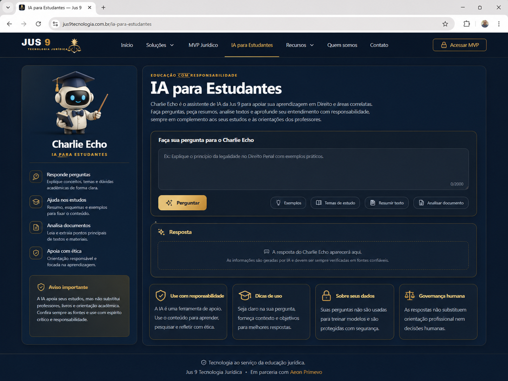

© Jus 9 Tecnologia Jurídica — software livre, autoria preservada.
JUS
9
Início
MVP
Governança
Equipe
Contato

Educação com responsabilidade
IA para Estudantes
Charlie Echo em modo robozinho / Avatar Professora.
Perguntar